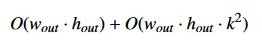

Vitis™ ハードウェア アクセラレーションの入門チュートリアルxilinx.com の Vitis™ 開発環境を参照 |
概要¶
前の例では単純なバイラテラルサイズ変更アルゴリズムを使用しました。これはアクセラレーションで大きな利益が得られる候補ではありませんでしたが、異なる機械学習用にバッファーを同時に多数の解像度に変換する場合もあるでしょう。または、フレーム ウィンドウ中に CPU はほかの処理用に確保しておくため処理をオフロードする場合もあります。
それでは、FPGA ストリーミングの本当の実力を見てみましょう。メモリとの間でデータを転送するのには時間がかかるので、その代わりに画像の各ピクセルを 1 つの操作から次の操作にストリーミングし、メモリに戻さずに別の画像処理パイプライン段に送信するようにします。
この例では、先ほどのイベント シーケンスを変更してガウシアン フィルターを追加します。これは、エッジ検出、コーナー検出などの操作の前に画像のノイズを除去するのによく使用されるパイプライン段です。その後に、2D フィルターやその他のアルゴリズムを追加することも可能です。
前のワークフローを次のように変更します。
メモリから画像のピクセル データを読み出します。
必要に応じて、ピクセル データを適切なフォーマットに変換します。ここでは、OpenCV ライブラリで使用されるデフォルト フォーマットである BGR に変換します。さまざまなストリームやカメラなどからデータを受信する実際のシステムでは、ソフトウェアまたはアクセラレータ (次の例で説明するように、ここでは基本的に「コストのかからない」操作) でフォーマットを変換する必要があります。
カラー画像の場合は、各チャネルを抽出します。
個々のチャネルに対してバイラテラル サイズ変更アルゴリズムを使用します。
各チャネルにガウシアンぼかしを実行します。
チャネルを再結合し、メモリに戻します。
この例には、バイラテラル サイズ変更とガウシアンぼかしの 2 つの大きなアルゴリズムがあります。wout × hout のサイズ変更された画像と、幅 k の正方ガウシアンウィンドウに対しては、パイプライン全体の計算時間はおよそ次のようになります。

試しに、k を比較的大きくしてみます。7 × 7 ウィンドウを使用します。
キー コード¶
このアルゴリズムでは、引き続き Vitis ビジョン ライブラリを使用します。
先ほどと同様、ライブラリ (ハードウェア ソース ファイルのテンプレートを使用してハードウェアに配置) をクロック サイクルごとに 8 ピクセルを処理するよう設定します。このハードウェア アルゴリズムは、機能的には標準ソフトウェア OpenCV のコードと同等です。
cv::resize(image, resize_ocv, cv::Size(out_width, out_height), 0, 0, CV_INTER_LINEAR);
cv::GaussianBlur(resize_ocv, result_ocv, cv::Size(7, 7), 3.0f, 3.0f, cv::BORDER_CONSTANT);
例 7 と同様にサイズ変更を実行し、ガウシアンぼかし関数に 7 × 7 ウィンドウを適用します。また、ランダムに σx = σy =3.0 を選択しました。
アプリケーションの実行¶
XRT ランタイムが初期化されたら、ビルド ディレクトリから次のコマンドを実行してアプリケーションを実行します。
./08_opencv_resize alveo_examples <path_to_image>
この例でのハードウェアのコンフィギュレーション方法のため、画像が特定の要件を満たす必要があります。1 クロックごとに 8 ピクセル処理するので、入力幅は 8 の倍数である必要があります。
そうでない場合、要件が満たされていないことを示すエラー メッセージが表示されます。これはライブラリの基本的な要件ではありません。どんな解像度の画像でも、1 クロックごとに何ピクセルでも処理できます。ただし、入力画像が特定の要件を満たしていれば、さらに高速処理が可能となり、最適なパフォーマンスが得られます。ハードウェアおよびソフトウェア OpenCV インプリメンテーション両方からのサイズ変更後の画像に加え、プログラムにより次のようなメッセージが表示されます。
-- Example 8: OpenCV Image Resize and Blur --
OpenCV conversion done! Image resized 1920x1080 to 640x360 and blurred 7x7!
Starting Xilinx OpenCL implementation...
Matrix has 3 channels
Found Platform
Platform Name: Xilinx
XCLBIN File Name: alveo_examples
INFO: Importing ./alveo_examples.xclbin
Loading: ’./alveo_examples.xclbin’
OpenCV resize operation: 7.170 ms
OpenCL initialization: 275.349 ms
OCL input buffer initialization: 4.347 ms
OCL output buffer initialization: 0.131 ms
FPGA Kernel resize operation: 4.788 ms
前の例では、CPU と FPGA のパフォーマンスはほぼ同じでした。CPU 関数では処理時間が大幅に長くなっていますが、FPGA の実行時間はほとんど増加していません。
ここで入力のサイズを倍にし、1080p 画像を 4k 画像に変更してみます。この例のコードに例 7 と同様の変更を加え、再コンパイルします。
例を再び実行すると、非常に興味深い結果が得られます。
-- Example 8: OpenCV Image Resize and Blur --
OpenCV conversion done! Image resized 1920x1080 to 3840x2160 and blurred 7x7!
Starting Xilinx OpenCL implementation...
Matrix has 3 channels
Found Platform
Platform Name: Xilinx
XCLBIN File Name: alveo_examples
INFO: Importing ./alveo_examples.xclbin
Loading: ’./alveo_examples.xclbin’
OpenCV resize operation: 102.977 ms
OpenCL initialization: 250.000 ms
OCL input buffer initialization: 3.473 ms
OCL output buffer initialization: 7.827 ms
FPGA Kernel resize operation: 7.069 ms
驚くべき結果です。CPU の実行時間はほぼ 10 倍になりましたが、FPGA の実行時間はほとんど変わっていません。
FPGA は、処理を並列実行するのに非常に優れています。このアルゴリズムは、I/O で制限されるのではなく、プロセッサで制限されます。さらに分解してクロックごとに複数のピクセルを計算することによりデータをより高速に処理し (アムダールの法則)、1 つの演算から次の演算にストリーミングすることにより並列実行を増やす (グスタフソンの法則) ことができます。ガウシアンぼかしをさらに個々の要素の計算に分解し、それらを並列に実行することもできます (Vitis ビジョン ライブラリで既に実行済み)。
帯域幅ではなく計算が制限になったので、アクセラレーションの利点がはっきりわかります。これを FPS で考えると、x86 クラスの CPU インスタンスでは毎秒 9 フレーム処理できますが、FPGA カードでは 141 フレーム処理できます。さらに演算を追加すると、CPU での処理時間はどんどん長くなりますが、FPGA ではリソースさえあればいくらでも演算を追加できます。実際、Alveo U200 カードで使用可能なリソースと比較すると、この例のカーネルはまだ非常に小型です。
これを前の例と比較すると、1920x1200 の入力画像では結果は次の表に示すようになります。差を示す列は、例 7 の拡大とこの例の拡大を比較したものです。
| 動作 | 縮小 | 拡大 | Δ7→8 |
|---|---|---|---|
| ソフトウェアでのサイズ変更 | 7.170 ms | 102.977 ms | 91.285 ms |
| ハードウェアでのサイズ変更 | 4.788 ms | 7.069 ms | 385 µs |
| ΔAlveo→CPU | -2.382 ms | -95.908 mss | -90.9 ms |
アクセラレーションの利点は明らかです。
追加演習¶
この演習に、追加で次のことを試してみてください。
ホスト コードを編集し、試行錯誤で画像サイズを変えてみましょう。画像サイズを大きくすると、実行時間はどうなりますか。画像サイズを小さくするとどうなりますか。アクセラレータを使用する意味がなくなるのはどの地点はですか。
追加のハードウェア レイテンシはいくらですか。
学習ポイント¶
ファブリックで 1 つの演算から次の演算にパイプライン処理してストリーミングすると、有益です。
xf::OpenCV などの FPGA に最適化されたライブラリを使用すると、一般的なアルゴリズムを再インプリメントする必要なく、処理速度とリソースのバランスを取ることができますき、アプリケーションのより重要な部分に焦点を置くことができます。
選択するライブラリの最適化によって、デザインが制限されることがあります。ハードウェアをインプリメントする前に、使用するライブラリ関数の資料を参照してください。
これで、ランタイム入門チュートリアルは終了です。この情報が少しでもお役に立ったでしょうか。こちらにさらに多くのチュートリアルを用意していますので、参考にしていただければ幸いです。
Copyright© 2019-2022 Xilinx